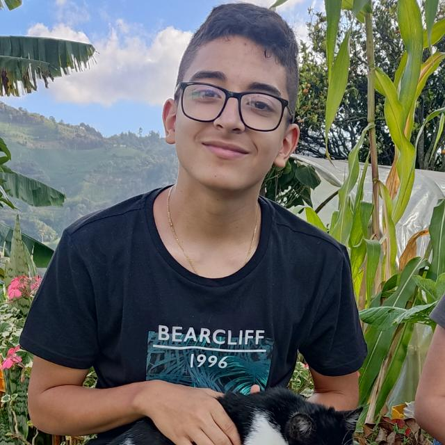

Desarrollador de software
Buscando la excelencia y calidad en cada proyecto

Buscando la excelencia y calidad en cada proyecto
Me llamo Mateo Montoya Ospina y Desde hace un tiempo me adentré
en el esotérico y enigmático mundo de la programación. Mi objetivo
diario es mejorar mis habilidades, relacionarme y aprender de mis
compañeros. Sin embargo, mi mayor aspiración es alcanzar un alto
nivel de calidad humana y profesional en cada proyecto, para que
todos se sientan satisfechos. Aunque me especializo en el desarrollo
Back-end, estoy constantemente buscando expandir mis horizontes.
Soy un desarrolador Junior.Nacido el 26 de Octubre de 2006
desde muy temprana edad he resaltado un alto nivel de
auto-superacion, compromiso, responsabilidad, perfeccionismo
y gran calidad en mis valores humanos. Lo que con los años me
ha permitido obtener gran cantidad de logros y reconocimientos
escolares y extra escolares de los cuales me siento muy orgulloso.
A la edad de 16 años, al culmen de mi etapa escolar, empece a
intrigarme respecto a mi futuro laboral y de que manera podria
enfocar mis habilidades al beneficio propio y de todas las personas
que me rodeen. Por lo que finalmente decidi enfocarme en el mundo de
la programacion, decision de la cual me siento muy satisfecho,